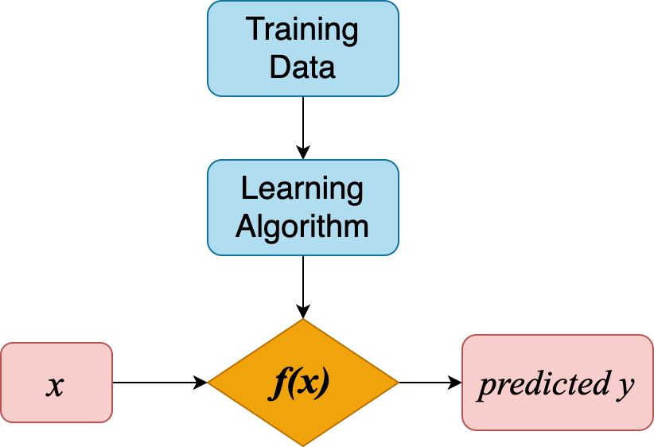
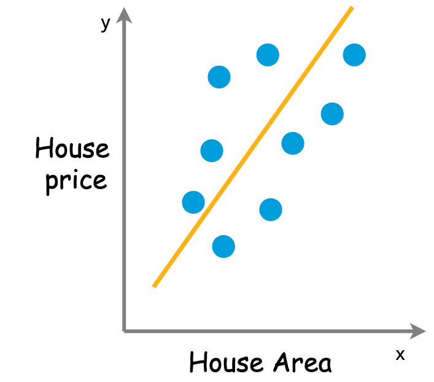
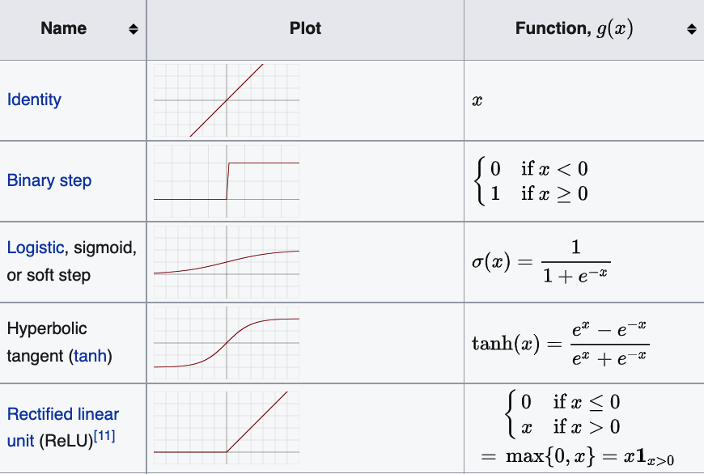

Regression theory
Intro
ML Goal

\[ f(x) = \hat{y}(w, x) \]
- \(x\) is input features
- \(w\) is weights or parameters
ML is meant to
- make the target \(\hat{y}(w, x)\) as close as possible to real values in training data
- by choosing proper weights \(w\)
- the “error” or “cost” between real values and predicted values is presented with loss function
Then ML goal becomes
minimizing loss function \(J(w)\)
with respect to weights \(w\)
We’ll learn
- Ordinary least squares (linear regression)
- Neural network (non-linear regression)
- Loss function and optimization algorithms
Ordinary Least Squares (linear regression)
Model representation

\[\hat{y}(w,x) = w_0 + w_1x_1\]
univariate linear regression
When we have more input features, e.g. number of bedrooms, area of balcony, construction year, etc.
The model becomes \[ \hat{y} (w,x) = w_0 + w_1 x_1 + w_2 x_2 + \cdots + w_n x_n \]
- \(\hat{y}\) is the target value
- \(X = (x_1, \cdots, x_n)\) are input features
- \(W = (w_0, \cdots, w_n)\) are
weights
- weight \(w_0\) is also called intercept
- and the other weights \((w_1, \cdots, w_n)\) are coefficients.
Loss function
We have a linear model with certain values for the weights. How well does this model capture the data that we observe?
We could use loss function
\[ J(w) = ||y - \hat{y}||^2 \]
the sum of squares of the differences between real values \(y\) and predicted values \(\hat{y}\)
Optimization algorithm
Do you still remember the ML goal?
minimize loss function \(J(w)\)
This is done by optimization algorithm:
keep changing weights \(w\) to reduce loss \(J(w)\) until it hopefully ends up at a minimum

Gradient descent for two features: 
Summary:
Linear regression
- Model presentation: \(\hat{y} (w,x) = w_0 + w_1 x_1 + \cdots + w_n x_n\)
- Loss function: \(J(w) = ||y - \hat{y}||^2\)
- Optimization algorithm: Gradient Descent
Neural network (non-linear regression)
Model representation
Hidden layer
Activation function

NN v.s. linear regression
- NN stacked layers and non-linearity → detect more complex patterns
- Neurons is kind of feature extractor
- However, NN requires large amount of data to detect the patterns and extract the features
Deep learning frameworks
scikit-learn NN model is multi-layer perceptron
To use more complex NN, other framework should be used, e.g. PyTorch, Keras, TensorFlow, etc.
Want to have a look at various NN models? Try plot NN
Loss function
Loss function can be shared by all regression models
\[J(w) = ||y - \hat{y}||^2\]
Optimization algorithms
Stochastic Gradient Descent(SGD)
- GD uses actual gradient, calculated from the entire training data
- SGD use an estimate calculated from a randomly selected subset of the training data
Adam(Adaptive Moment Estimation)
- also a stochastic optimizer
- but can automatically adjust the amount to update weights
- works great on large datasets (thousands of training samples or more) in terms of both training time and validation score
- Use
Adamas the first choice in practice
- not a optimization algorithm
- but a method to compute gradients for neural network. Then these gradients are used by optimization algorithm to update weights.
Summary:
Neural network
- Model presentation: multi-layer perceptron
- Loss function: \(J(w) = ||y - \hat{y}||^2\)
- Optimization algorithm: SGD, ADAM